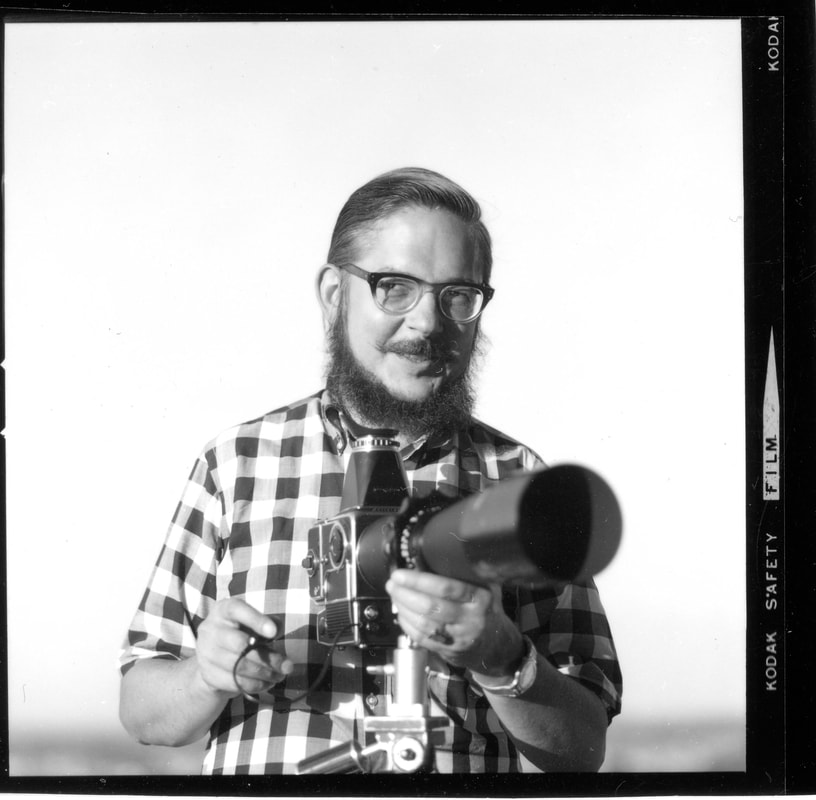

James O. Milmoe
Photographer, 1927 to 2022

James O. (Jim) Milmoe was a photographer whose work ranged from architecture to fine art to his own abstract studies of walls and signs. Born in Pittsburgh, he came to Colorado in the 1940s to study at Colorado College and later earned a Master of Fine Arts from the University of Denver. He became internationally respected for photographing paintings and sculpture for art books, museum catalogs and fine art reproductions, and he photographed buildings for architects and corporate clients. His own photographs are held in the permanent collections of the Museum of Modern Art in New York, the Art Institute of Chicago and the Denver Art Museum.
He was also a teacher, lecturer and juror. He taught photography at the University of Denver, the University of Colorado and, as a visiting professor, the University of California, Berkeley, and he was a Fellow of the Photographic Society of America. His career culminated in 2022 with The Art of Grave Markers, a book of his black-and-white photographs of headstones from around the world, published by the Colorado Photographic Arts Center and still available. He died at home in December 2022, predeceased by his wife, Marilynn, a writer who shared his love of art and photography.
Archive
A new jamesomilmoe.com, with a fuller archive of his photographs and his life's work, is in progress.
Contact
For prints, the book or questions about the archive, write to .